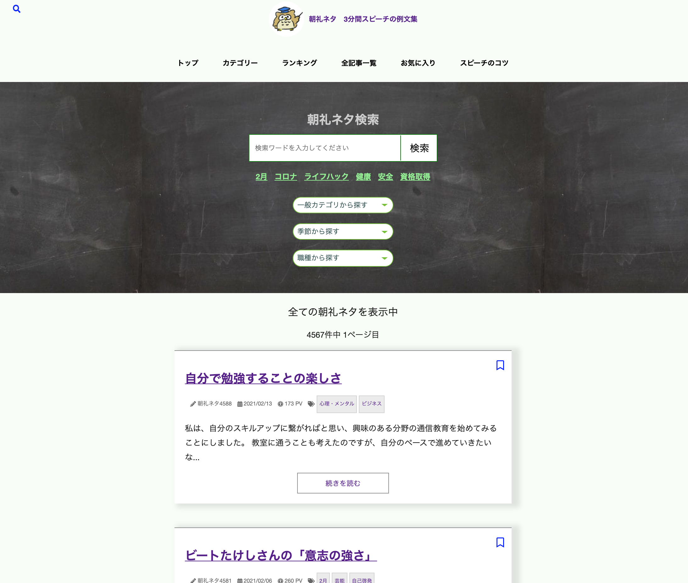
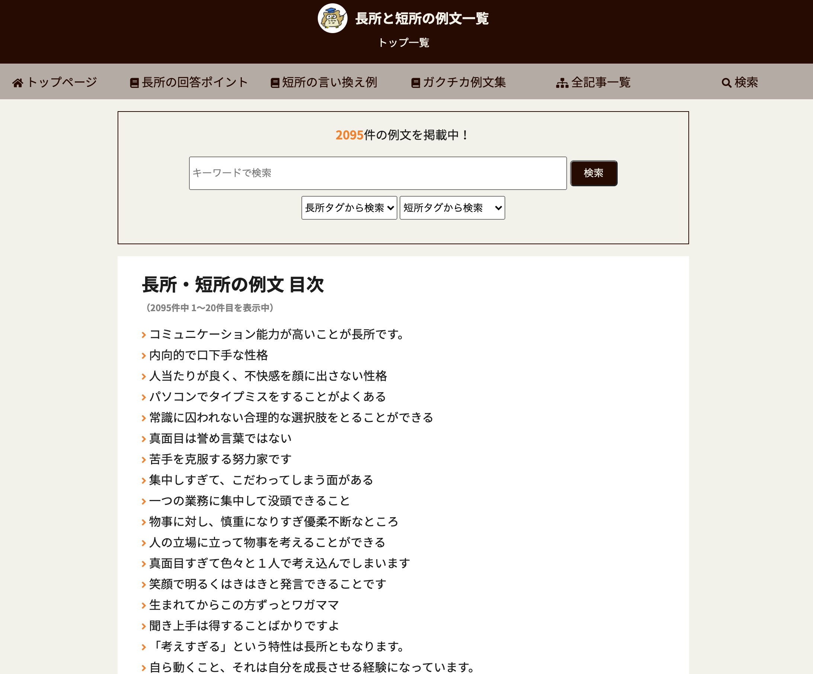
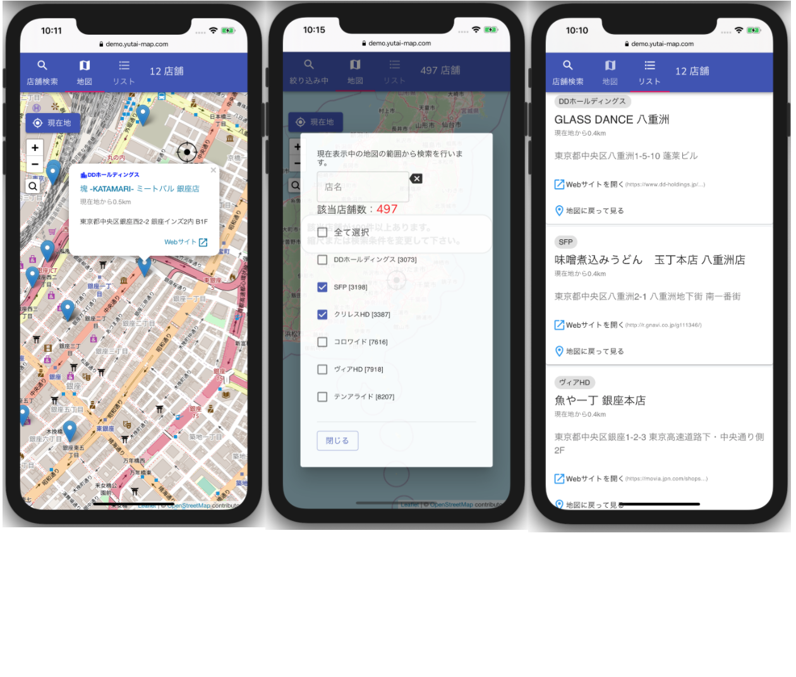

■プロフィール
Naoto Imayo
東京在住 アラフォー 二児の父
趣味：海外旅行、キャンプ
PHP及びJavascriptを用いた開発経験が多く、
新規プロジェクトでバックエンド〜フロントエンド（SPA）を一気通貫で開発した経験もあります。
2020年6月より個人事業主として活動を開始し、
インターネットを活用したメディア・サービスの企画・開発・運営も行っています。
■企業での主な開発実績
- ・受託開発企業
- - Web版スマホアプリの機能追加
- - 物流系業務システム構築
- ・パッケージソフトの自社開発企業
- - クラウド版税務ソフト新規開発
- - 社内向け販売管理システム
- ・電気機器業界(グローバル企業)
- - 新パッケージ(CMS)導入に伴うコンテンツ移行
- - ITベンダーとの取り次ぎ業務、社内メンバへの技術サポート
- ・大手自社サービス企業（飲食店検索サービス）
- - 検索システム、REST API、バッチ等のバックエンド開発
- - 各種社内システムや業務支援ツールの開発
開発環境：
PHP7系、PHP5系、Laravel他複数のFW利用経験あり
javascript(React、jQuery)、RDB(MySQL他)、外部APIの利用
■個人運営のメディア・サービス

朝礼ネタ
月間27万PV 3.3万UU (2021/2 実績)
Web、スマホ（iOS/Android）、電子書籍のマルチデバイスに対応。
回遊率が非常に高く好評にご利用頂いております。
使用技術：Gatsby.js / ReactNative(Expo) / Contentful / Netlify / Algolia

長所と短所の例文
月間14万PV 4.4万UU (2021/2実績)
保有コンテンツの中で一番ユーザー数が多く、さらに増加傾向にあります。
今後の展開を模索中です。
使用技術：WordPress

株主向けのサービス（開発中）
株主優待の保有者をターゲットにしたサービスを開発中です。
一部の機能のデモ版を詳細ページよりご確認いただけます。
使用技術：Laravel、React、Material-UI
その他にもツール系Webアプリ、旅行系コンテンツなども運営しています。
■請負の実績
・一般社団法人 ポータルサイト構築
・大使館 特設ページ作成
・小物製造メーカー コーポレートサイト外国語版対応
・靴工房 シミュレーター及び管理画面構築
・中国輸入業者 コーポレートサイト構築
主な使用技術：Wordpress、jQuery/HTML/CSS
一部：Laravel＋React
最後まで閲覧いただきありがとうございます。